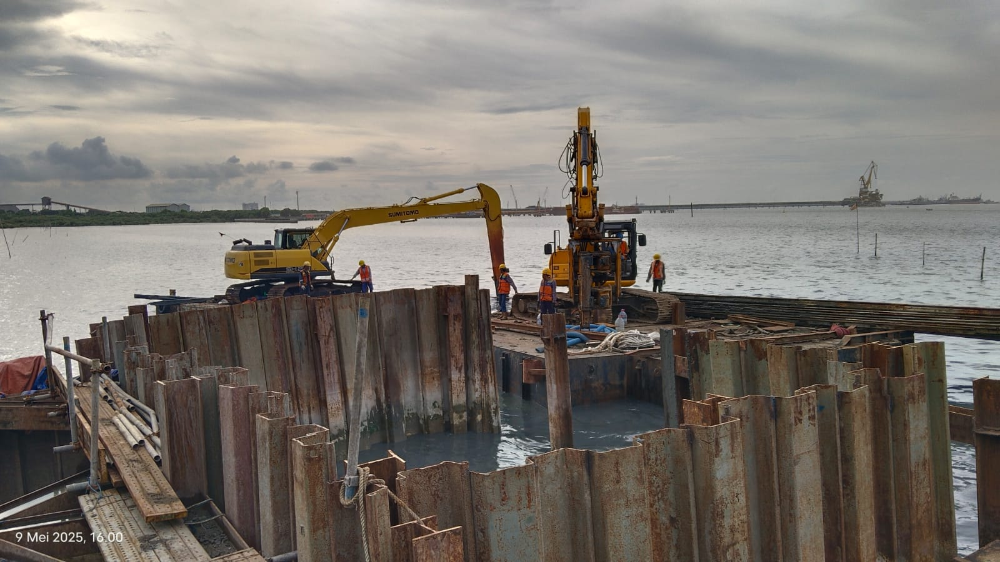

Helper Operator & Heavy Equipment Worker
Nama saya Ismail. Saya adalah pribadi yang terus belajar dan berkembang, dengan ketertarikan pada teknologi dan dunia digital. Saya suka mencoba hal baru, terutama yang berhubungan dengan kreativitas, logika, dan pemecahan masalah. Bagi saya, proses belajar adalah perjalanan penting untuk menjadi versi diri yang lebih baik dan mandiri.

Saya berusia 20 tahun dengan pengalaman kerja di bidang lapangan selama kurang lebih 1 tahun. Saya pernah bekerja sebagai helper mekanik alat berat, kemudian terlibat dalam pekerjaan sipil offshore selama 3 bulan, dan terakhir sebagai helper operator alat berat hingga Februari 2026. Saat ini saya sedang tidak bekerja dan memanfaatkan waktu untuk mencari peluang kerja serta mengembangkan diri. Walaupun saya masih dalam tahap belajar dan belum memiliki keahlian khusus yang mendalam, saya memiliki semangat kerja tinggi, disiplin, serta kemauan kuat untuk belajar dan berkembang di dunia kerja. Saya terbiasa bekerja di lingkungan lapangan dan siap menghadapi tantangan serta beradaptasi dengan berbagai kondisi kerja.